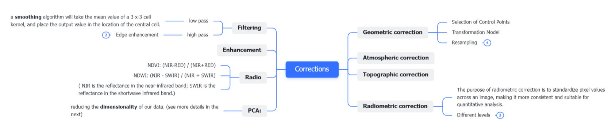
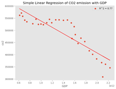
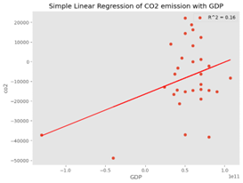

3 Week 3 Correction
3.1 Summary
This week we mainly talk about two main section, one is correction, another is about images enhancement. There are lots of reasons cause images become incorrect, which will bring lots of inconvenience in further analysis. All these factors will bring some obstacles for our following research. In that case, it is necessary to correct and enhance images. Although there are many methods which can improve the quality of images, different methods need to be chosen carefully for different scenarios and purposes.

3.1.1 Corrections
3.1.1.1 Geometric correction
Geometric correction refers to the process of correcting distortions in spatial data, particularly in images or maps, to ensure accurate representation of the Earth’s surface. The goal of geometric correction is to align the features in the data with their true geographic locations. We must re-sample the final raster because we can adjust the pixel values of the corrected image to the new pixel grid.
Selection of Control Points: Control points are identifiable features that have known geographic coordinates. These points are used to establish a relationship between the spatial data and the real-world coordinates. In the spatial data, some clearly recognisable features or characteristics are selected, such as road intersections, building corners, river crossings, etc. These features should be clearly visible in the image and have a well-defined location geographically.
Transformation Model: the relationship between the control points (the spatial data) and their corresponding real-world coordinates. Common transformation models include polynomial transformations, affine transformations, or rubber sheeting.
3.1.1.2 Atmospheric correction
Atmospheric corrections help to remove the effects of atmospheric media (which would reduce contrast of image) on remotely sensed images in order to obtain more accurate surface reflectance or radiance values, resulting in better contrast between images acquired at different times and locations.
How to do? – Dark object subtraction (DOS): Searches each band for the darkest value then subtracts that from each pixel. (Some objects’ DN values are theoretically 0, such as deep water bodies or shadows.Therefore, any value that it has can be attributed to the atmosphere and need to be removed.
3.1.1.3 Topographic correction
Orthorectification is a geometric correction process applied to satellite or aerial imagery to remove distortions caused by terrain variations, sensor viewing angles, and Earth curvature
3.1.1.4 Radiometric correction
Convert TOA radiance to TOA reflectance
Radiance is how much light the sensor sees.
Reflectance is the ratio of light leaving the target to amount striking the target. Here will still have atmopsheric effects in the way of our true apparent reflectance. Confusingly all of these can be termed reflectance and indeed sometimes radiance is referred to as reflectance.
3.1.2 PCA
Principal Component Analysis (PCA) is designed to reduce the dimensionality of our data.
Running the summary will given the proportion of variance explained by each PCA component and the cumulative proportion of the variance explained (from all the PCA layers compared to the original input data). Overall, PCA is trying to:
Transform multi-spectral data into uncorrelated and smaller dataset
Keep most of the original information
The first component will (should) capture most of the variance within the dataset
“A big take-away from this is that system of linear equations are equivalent to a rotation of coordinate systems, which are change of perspective”
PCA chooses the new axes sequentially one after another--PCA looks at the data from all possible angles and figures out which of the infinite number of perspectives spread out the data the most. The first new axis is the one which the data are maximally spread out. So the first new axis would have the most information for distinguishing the points from each other.
“Loading is the correlation between an original variable and a principal component.”
Cracking Principal Components Analysis (PCA) — Part 2 | by Hyeon Gu Kim | Medium
3.2 Application
3.2.1 Application of Corrections
Digitising paper maps is a process of aligning paper maps with modern geographic coordinate systems so that they can be used for vectorisation and integration with other GIS datasets. This process can facilitate the effective use of historical maps, house plans, etc. in a modern GIS environment. (Geometric correction)
NDVI is an index of vegetation condition that is based on reflectance in the red and near-infrared bands, and therefore atmospheric influences need to be taken into account before it can be calculated. Atmospheric correction is crucial for precise quantitative analysis and vegetation monitoring. If your application requires accurate reflectance values or vegetation indices, it is advisable to conduct atmospheric correction to eliminate atmospheric effects. (Atmospheric correction)
3.2.2 Transformation for building models
Based on the different soil hyperspectral data and its soil salt content, and using different spectral transformation methods including logarithm, RMS, continuum removal, first-order, second-order RMS and so on.
Wang et al. (2016) established a soil salinization monitoring model to achieve the high-precision quantitative inversion of soil salinity. Compared to a model (R2 = 0.59) based on traditional multi-spectral remote sensing technology, the model which converted by different transformation especially the first-order differential spectral transformation showed better effect (R2 = 0.7).
3.2.3 Transformation for studying CO2 emissions
Many researchers briefly suggested studying the changes in CO2 emissions and CO2 in the atmosphere over time by applying mathematical equations known as differential equations (Tsokos C P and Xu Y., 2009). Differential equations can help us understand how the response variable changes over time. It is more interesting to understand the rate of change of CO2 emissions in the short and long term than to study the emissions themselves (Ram C. Kafle et al., 2019; J.O. Ramsay and B.W. Silverman, 2005.).
For example, if we performed the simple linear regression to figure out the relation between GDP and CO2 emissions, the R square is high (0.77). However, if we use differential data, the R-square of the linear regression between differential data of GDP and CO2 emissions is only 0.16.
 
Therefore, in this case, we can perform a differential transformation on the CO2 emissions data and then obtain differential data for the following regression analysis in order to understand the change in CO2 emissions over time.
3.3 Reflection
The week’s content was most valuable in enhancing our comprehension of various calibration techniques for remote sensing image data. It also provided an introduction to the principles of linking and enhancement. Although a significant portion of remote sensing data is pre-calibrated before acquisition, it remains crucial for us to comprehend the processing steps, as not all data undergoes this preparation. Additionally, a thorough understanding of the suitability and constraints of different methods is essential for their identification and critical evaluation in future applications.